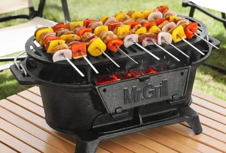
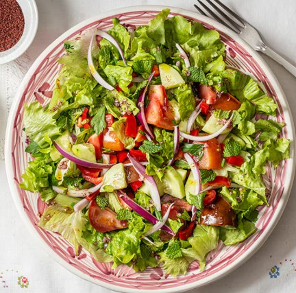
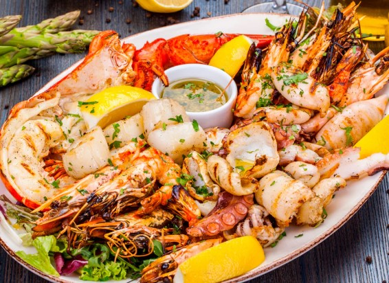
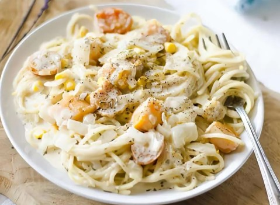
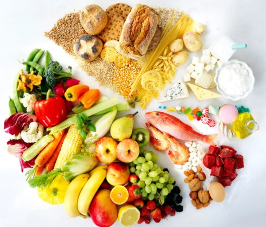

¿QUÉ QUIERES COCINAR?
Fáciles
6
Postres
Pollo y carne

Parrilla

Ensalada
Guarniciones

Mariscos

Pasta

Saludables
⭐ TOP 10 RECETAS ⭐
Tallarines de Pollo
Lomo Saltado
Pastel de Chocolate
7 PLATILLOS QUE PUEDES PREPARAR CON FRIJOLES REFRITOS
Si tienes un poco de frijoles refritos, ya sea negros o bayos, en tu refrigerador, no dudes en preparar alguna de estas 7 opciones, ¡te fascinarán! Lo mejor de todo es que hay algo para todos los gustos...
Ver el tip ➤
TIPS DE COCINA
¿Cómo hacer que una bolsa de ensalada dure por más tiempo?
Gretel Morales
 TIPS DE COCINA
TIPS DE COCINA
¿La comida caliente se puede meter al refrigerador?
Gretel Morales
 TIPS Y CONSEJOS
TIPS Y CONSEJOS
Las 15 mejores plantas medicinales en México
Kiwilimón